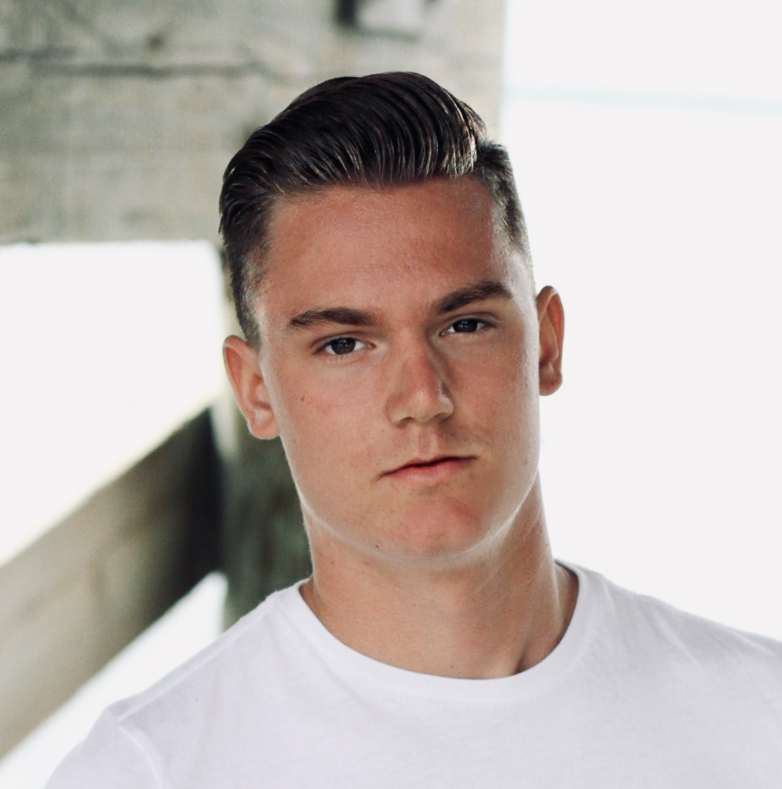

About
 Born and raised in Northwest Washington. I spent the last 6 years in Phoenix/Tempe, AZ. Happily back in Seattle, WA — studying software engineering at Flatiron School. I have a very sweet golden lab pup, Sam and am engaged to my best friend, Taylor. I'm passionate about business ethics, and consumer privacy.
Back Story
I grew up in Bellingham, WA with my younger brother Caleb, parents — Cameron and Betsy — and my first dog named Sam.
Since I was young, my personal disposition has always been geared toward design. More to add here later..